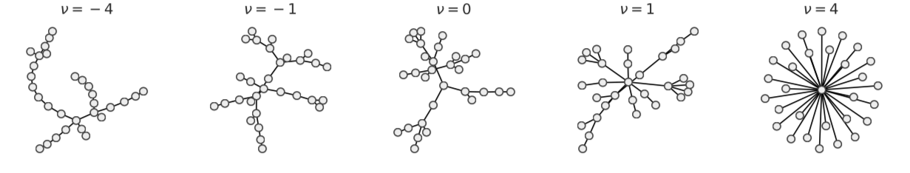

dynamicalab.generators.generalized_PA_model¶
-
dynamicalab.generators.generalized_PA_model(nu, p, N, directed=False, max_step=10000.0)[source]¶ Generates a network using the generalized preferential attachment model. The process goes as follows:
- Initialize the network with two connected nodes.
- Choose a birth event with probability
p, or a growing event with probability1-p. Then: - If a birth event, choose and place a new node in the network.
- If a growth event, choose an existing node proportionnal to its total degree powers
nu.
- Choose a birth event with probability
- Choose an existing node following 2b.
- Connect the node from step 2 with node from step 3.
- Repeat steps 2,3,4 until the number
Nis reached.
Parameters
- nu : float
- Kernel power.
- p : float
- Birth probability.
- N : int
- Number of nodes. The estimated steps to reach
Nnodes isN/p. - directed : bool : (default=False)
- Construct a directed network. If true, new edges are connected toward older nodes and the output is a
nx.Digraph - max_step : int : (default=1e4)
- Maximum number of events before the algorithm ends. This does not apply if the desired number of nodes is reached.
Returns
- nx.Digraph or nx.Graph
- The resulting graph.
Raise
ValueError- Occurs if the birth probability
pis smaller or equal to zero.
Example
import dynamicalab as dlb nu = 1.0 p = 1.0 N = 40 G = dlb.generalized_PA_model(nu, p, N)
Note
See Young et al., 2018 for an intensive description of the model.
Example of networks for
p=1. Figure inspired of Young et al., 2018.